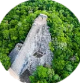
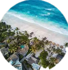
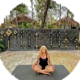

Sobre Nosotros
The Yellow Nest es un Hotel Boutique ubicado en Tulum, muy cerca del Parque Dos ojos, rodeado de hermosos cenotes y una naturaleza increíble. En noviembre de 2018, The Yellow Nest abrió sus puertas con el objetivo de crear un lugar ideal para aquellos que deseen relajarse y disfrutar de la flora y la fauna característica de México.
Contamos con diferentes servicios y actividades para hacer de tu estadía una experiencia inolvidable. La estadía incluye un exquisito y variado desayuno flotante, uso de bicicleta para trasladarte a la playa y otros lugares cercanos, servicio de WiFi, clases de yoga y meditación.
  